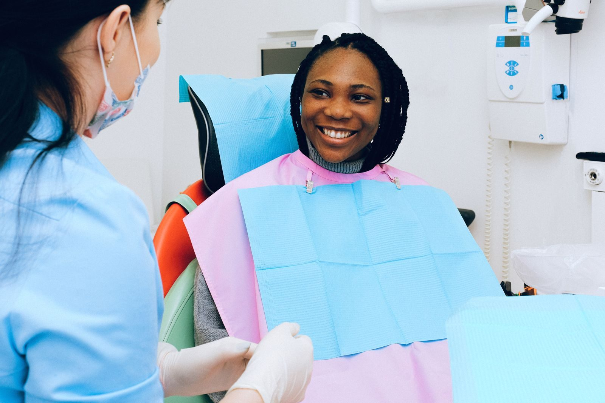
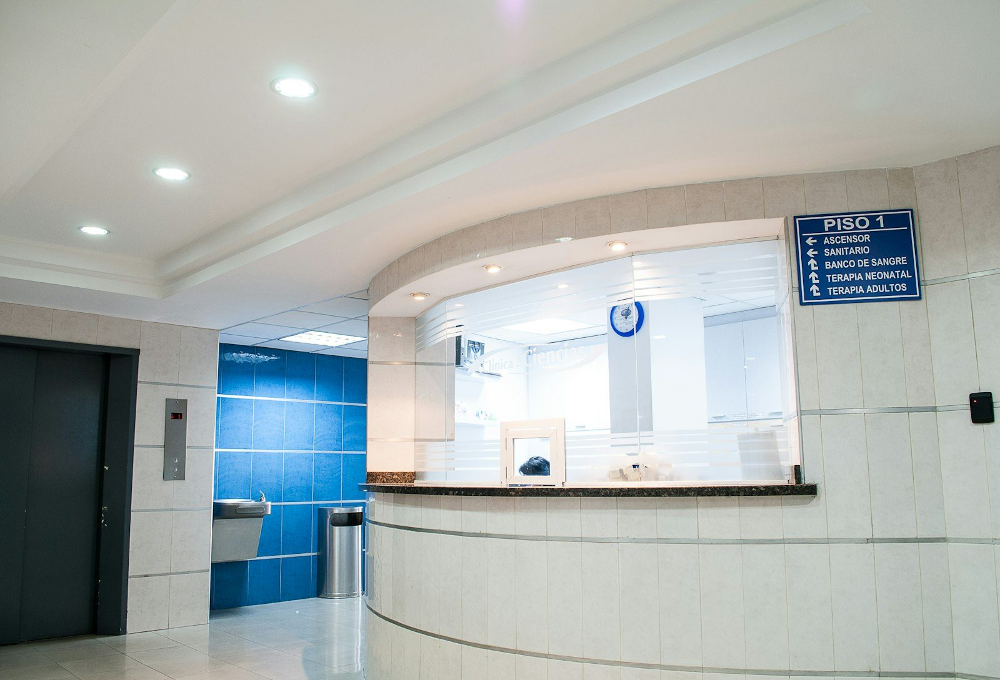

Odontología
Atención odontológica.
Los Laureles · Ecatepec
Aunque la hoja lo clasifica como dentista, la ficha pública es de un centro de especialidades médicas en Blvd. Ecatepec, manzana 15, lote 2. 3.9 de 5 a partir de 49 opiniones (la hoja contabilizaba 56).
Servicios
Somos un centro de especialidades: odontología, dermatología y ginecología.
Atención odontológica.
Consulta de ginecología.
Consulta de dermatología.


“He acudido con la Dra. Blanca (odontóloga) y la atención es increíble, siempre al pendiente, se acomoda a tus horarios, muy amable y paciente.”
Reseña en Google · abril de 2024 · 5 estrellas
“La dermatóloga es muy buena, muy profesional […] explica todo a detalle, y también te escucha.”
Reseña en Google · enero de 2026 · 5 estrellas
“Te agendan una cita pero no respetan el horario. […] tardan 1 hr por paciente. Mejor busquen otras opciones en Ginecología.”
Reseña en Google · junio de 2025 · 1 estrella
“Saqué ‘cita’ con la ginecóloga Julieta y cuando llegué me dijeron que sería la 5 porque tenía unas ‘citas de emergencia’.”
Reseña en Google · mayo de 2024 · 1 estrella
Somos un centro de especialidades: odontología, dermatología y ginecología.
Lunes a viernes de 8:00 a 20:00; sábado de 8:00 a 14:00; domingo cerrado. Los horarios populares indican más afluencia al final de la tarde entre semana y el sábado por la mañana.
Blvd. Ecatepec, manzana 15, lote 2, manzana 001, Los Laureles, C.P. 55090, Ecatepec de Morelos. Coordenadas: 19.581967, −99.040093.
Al 55 5787 3742.
Los Laureles
Los Laureles, Ecatepec de Morelos, C.P. 55090.
| Lunes a viernes | 8:00 – 20:00 |
| Sábado | 8:00 – 14:00 |
| Domingo | Cerrado |